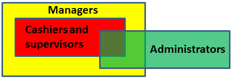
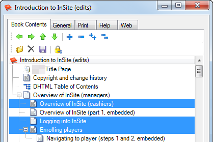
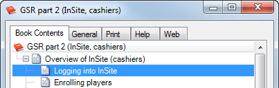
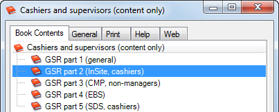
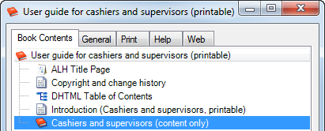
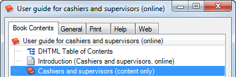

Creating role-based user guides using single sourcing14/07/15

In Creating single sourcing topics, I discussed how we can import and isolate common content to reuse in published topics. We recently delivered role-based user guides for a leading hospitality group.
Identifying that roles have overlapping functions
Three groups of people (‘roles’) needed user guides that include the functions they perform. Functions are done by one, two or all three roles. These sets can be represented as a Venn diagram.
Applying rules to achieve role-based content
We achieve role-based content using some basic rules:
- Each function is written as a topic which may have common content embedded.
- Each topic can be reused in one or more books – an ordered, tiered collection of topics.
- Each book can be reused in one or more books.
Creating topics in books
The original topics are created in a book; here’s the table of contents for one system module. We’ll reuse the topics highlighted in blue.
Reusing topics in other books
The topics highlighted earlier are reused in another book; this time specific to the role, such as cashiers and supervisors (‘cashiers’). This is an example of the single sourcing of topics.
Reusing books in other books – organising content
We next reuse the role-based books for each system module in another book. In this example, we reuse the book created in the previous step. This is an example of the single sourcing of books.
Reusing books in other books – outputting content
We next reuse the cashier’s content book, created in the previous step, to output to:
- a printable user guide
- online user guides – desktop and mobile versions.
The printable version also includes the things you’d expect; a title page, a copyright page and a table of contents. We publish this book to Microsoft Word then save as a PDF.
The online version doesn’t use title or copyright pages; the common copyright content is reused in the Introduction... topic. We publish this book to HTML pages and deliver it for their internal portal.
The online output serves as input to our mobile version. Here’s a demo version of other software content.
Three role-based user guides were delivered totalling 700 pages. The original content totalled 360 pages - 47% of the content was reused.
Next month I’ll discuss how we reused the content again, for the joint training of roles at a venue.